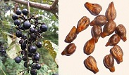
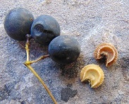

Wild grapes

|
|
One of the most important things to remember when foraging wild food, is that there are look-alikes.
There are many edible plants that have look alikes that are poisonous. Always make sure
that you know the look-alikes of the plants you are looking for, to make sure you don't make yoursef sick.
Most of the time when something is "poisonous" it does not mean that you will drop dead immediately if you eat it.
Sometimes it may just give you a belly ache.
|
Moonseed - Don't Eat

|
In any case, it is impairative that you avoid ingesting anything that will cause you harm
at all costs. Make sure you know the tell-tale differences between the plants and double, tripple, and quadroupal check before
you eat any of them. You may even want to find and identify the plant several times before consuming and maybe even in different seasons (since
plants typically look different throughout the season.). It is always better to be safe, rather than sorry in this case. Happy Foraging!
|